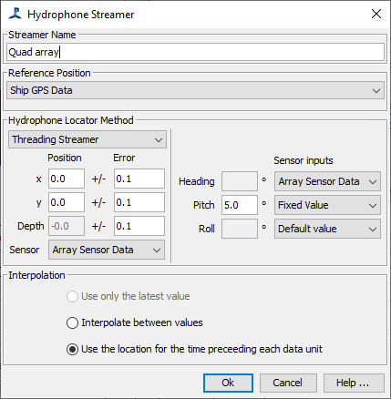

A streamer in PAMGuard is a collection or cluster of one or more hydrophones that are physically connected and are expected to move together. The name 'streamer' is a bit of a misnomer these days. It comes from early PAMGuard versions when we were mostly dealing with towed hydrophone arrays, but the general concept applies to a wide range of equipment. Things that should be considered as a streamer include towed arrays, mooring buoys, fixed autonomous sensors, drifters, etc.
In many circumstances, there is flexibility as to how many streamers you have and how many hydrophones. For example, if you'd put out ten moorings and knew the GPS locations of each, enter them as a streamer each, with one hydrophone per streamer. If you have a very long array with multiple active sections, you may want to enter this as a separate streamer for each section so that you can use separate array sensors for each section to better determine the hydrophone positions.

The Streamer name is for information purposes only.
Streamer locations can be referenced to either the "Ships GPS Data" or to "Fixed location (moorings and buoys)". If GPS data is selected then the system will automatically connect to data from the GPS Module. If a fixed location is selected, then additional options will appear allowing you to enter a reference Latitude and Longitude.

To change the position, use the menu on the button to the right of the displayed location. It is possible
to enter a new value manually, take the current GPS position or to paste in the last location clicked on the
PAMGuard map.
Two methods are available for calculating true hydrophone coordinates from the reference position. These are the "Threading Streamer" locator and the "Straight / Rigid Streamer" locator.
The Threading system is most applicable to towed hydrophone systems referenced to ship GPS data. It assumes that the streamer cable exactly follows the track of the vessel as it goes round corners. However, for hydrophones mounted rigidly on the hull of a vessel it would be more sensible to use the Straight / Rigid method.
If the reference position is a fixed location, then it only makes sense to use the Straight / Rigid method.
Enter the hydrophone coordinates in metres relative to the reference position.
Also enter estimates of the errors on those coordinates.
For GPS referenced locations, if these values are not null, they will override heading values from the GPS data. If they are null, then the GPS values will be used. Some users are starting to collect orientation data for hydrophones which can give a more accurate position than relying on the threading hydrophone model. See the Analog Array Sensors module information to see how you can hook up sensors to the array manager. If you wish to use other sensors, then it's possible to program new PAMGuard modules which will integrate directly into the array management system. An example of this is the RION Compass plug-in module which reads a digital compass through a serial port. If you're interested in adding additional sensors of your own, looking at the source code for the RION module is a good place to start, or contact the PAMGuard team.
Things sometimes move ! As we start to incorporate sensors into our arrays, it will be necessary to chose how to pick a position from a list of evolving positions over time.
These options tell the system to take the latest value entered by the user, to interpolate between values bracketing the time of an event or to use the values immediately preceding an event.